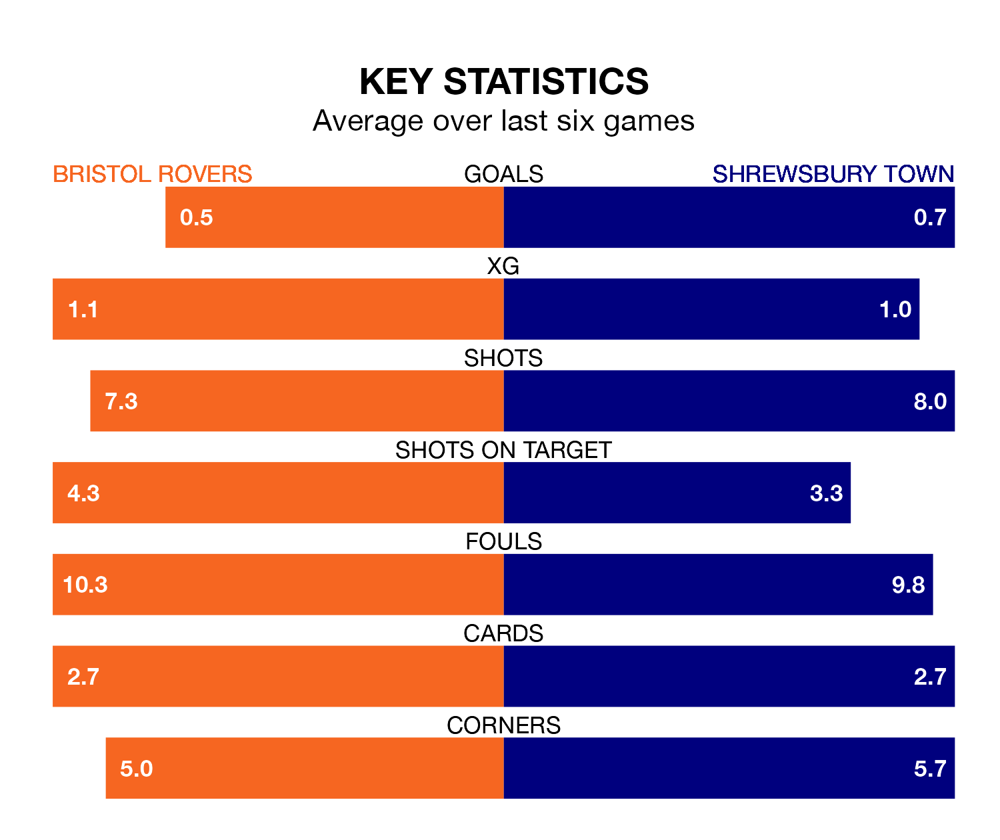

Shrewsbury Town travel to Bristol Rovers on Monday in EFL League One.
The visitors come into the game on the back of a draw in their last match, having tied with Oxford United 1-1 at home, with a goal from Jack Price.
The Gas, meanwhile, lost their last match, 2-0 against Port Vale.
In the last 10 years, Rovers and Shrewsbury have played each other on 13 occasions. They won five each, and they drew three times.
On average, the Gas scored 1.2 goals and the Shrews 1.4 in those matches.
Their last meeting was on September 16, when Rovers won 2-0 away.
In Chris Martin, Rovers have one of the league's sharpest shooters so far this season. He has notched 15 goals in 29 appearances, to sit fifth in the scoring charts.
His goal rate of one every 143 minutes is much quicker than that of Daniel Udoh, Shrewsbury's top scorer with a goal every 399 minutes, and a total of seven goals in 34 games.
Town are 18th in the table after 40 games, of which they have won 13 and drawn six, earning 45 points.
The Gas are three places ahead of the Shrews in 15th, with 14 wins and eight draws putting them on 50 points.
With 30 goals in 40 games so far this season, the visitors are the league's lowest scorers with 0.8 goals per game. And they are conceding more than average, letting in 56 goals at a rate of 1.4 per game.
The home side are also below average scorers, with 1.2 goals per game, compared to a league average of 1.3. They have conceded 1.5 goals per game.
Rovers are in mixed form in EFL League One, with two wins and a draw from their last six games.
And also with two wins and a draw over that period, Shrewsbury's form is identical – they have both taken seven points from 18.
Updated: 10:31 (UTC), 31/03/24